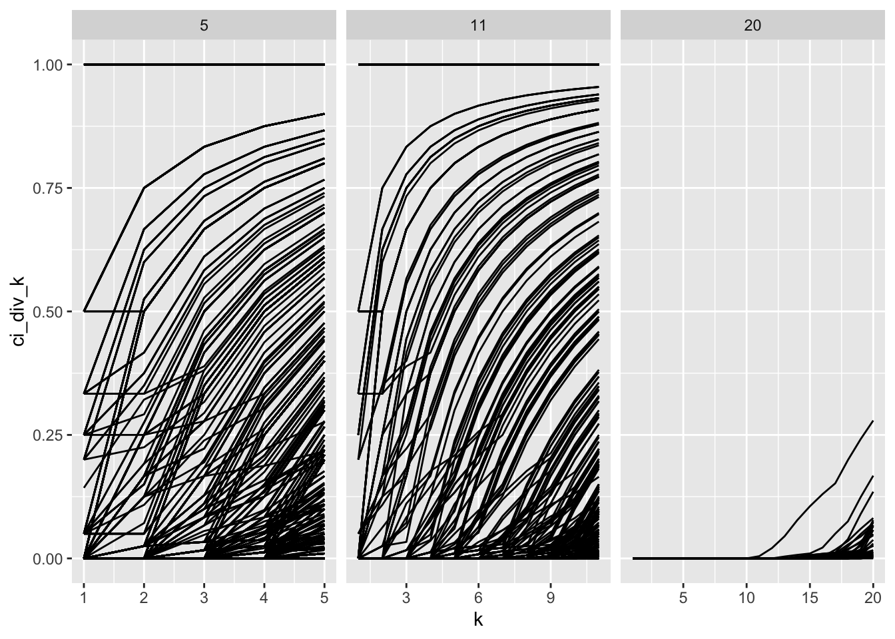
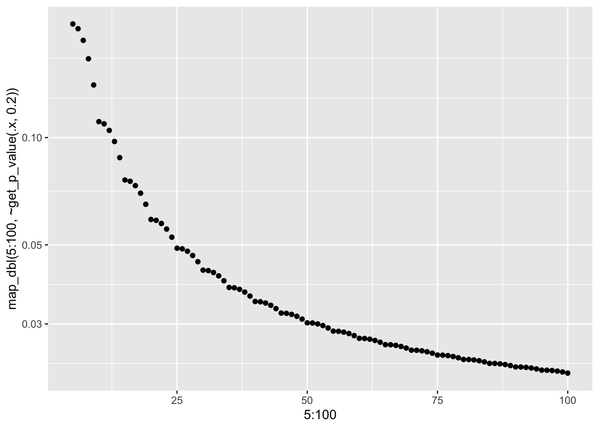

5 Check consistency of \(c_i/K\)
\[\text{E}[c_i/K] = \sum_{i=1}^{m}\frac{1}{m}p(\text{detect}|s_j = i)p(s_j = i).\]
\(c_i/K\) will converge to \(\text{E}[c_i/K]\) as \(K \to \infty\).
vi_survey %>%
filter(!attention_check) %>%
arrange(unique_lineup_id, weighted_detect) %>%
group_by(unique_lineup_id) %>%
summarise(total_k = n(),
ci = cumsum(weighted_detect),
k = 1:n(),
ci_div_k = cumsum(weighted_detect)/(1:n())) %>%
ggplot() +
geom_line(aes(k, ci_div_k, group = unique_lineup_id)) +
facet_wrap(~total_k, scales = "free_x")
Check p-values given by same \(c_i/K\) but different \(K\).
get_p_value <- function(n_eval, average_total_detect, alpha = 0.2) {
weighted_total_detect <- n_eval * average_total_detect
target_dist <- exact_dist(n_eval, 20, dist = "dirichlet")
floor_total <- floor(weighted_total_detect)
ceil_total <- ceiling(weighted_total_detect)
return(unname(sum(target_dist[(ceil_total:n_eval) + 1]) +
(ceil_total - weighted_total_detect) *
target_dist[floor_total + 1]))
}
ggplot() +
geom_point(aes(5:100, map_dbl(5:100, ~get_p_value(.x, 0.2)))) +
scale_y_log10()
Given the average weighted detect \(c_i/K\), we can not determine the p-value of a visual test. But with the simple model (Binomial), this is possible because all we care about is \(\text{#detect}/K\).